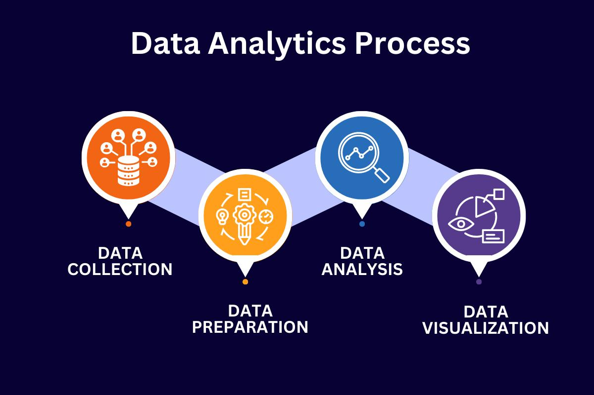

Understanding Data Analytics
Data analytics plays an important role in modern organisations. It allows businesses and other organisations to understand information, identify patterns and make decisions based on data.

How Does Data Analytics Work?
Data analytics involves several steps that transform raw data into useful information. The process begins by collecting data from different sources. The data is then cleaned and organised before being analysed to identify patterns and trends. Finally, the results can be presented through charts, reports and dashboards to make the information easier to understand.
Key Features of Data Analytics
- Data Collection – Data is gathered from different sources such as websites, surveys, databases and business transactions.
- Data Cleaning – Incorrect, duplicated or incomplete information is identified and corrected before analysis.
- Data Analysis – Data is examined to identify useful patterns, relationships and trends.
- Data Visualisation – Information can be presented using charts, graphs and dashboards to make the results easier to understand.
Advantages of Data Analytics
- Helps organisations make more informed decisions.
- Identifies trends and patterns in large amounts of data.
- Helps organisations understand customer behaviour.
- Supports improvements in productivity and performance.
- Helps organisations identify problems and opportunities.
Limitations and Challenges
Although data analytics provides many benefits, organisations may also experience several challenges.
- Data Quality: Inaccurate or incomplete data may produce unreliable results.
- Privacy: Organisations must protect personal and confidential information.
- Security: Data may be exposed to unauthorised access or cyber threats if it is not properly protected.
- Skills: Employees may require technical knowledge and training to analyse data effectively.
- Cost: Some analytics software, infrastructure and professional training can be expensive.
Data Analytics in the Workplace
Data analytics can be used by different departments within an organisation. The table below shows several examples.
| Department | Use of Data Analytics |
|---|---|
| Marketing | Analyses customer preferences, advertising performance and market trends. |
| Finance | Monitors financial performance, expenses and financial trends. |
| Human Resources | Analyses employee performance, recruitment and workforce information. |
| Sales | Tracks sales performance and identifies customer purchasing patterns. |
| Operations | Monitors processes and identifies opportunities to improve efficiency. |
Explore Data Analytics in Action
Data analytics is used in many real-world industries. Continue to the next page to explore its applications in education, business and healthcare.